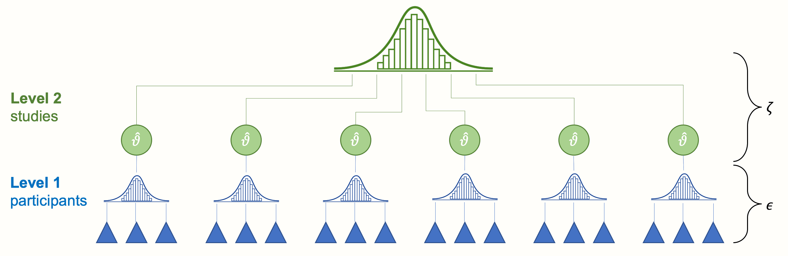

(PART) 高级方法
“多层次” Meta 分析

欢迎来到高级方法部分。在本指南的前一部分，我们深入探讨了我们认为几乎对每个 meta 分析都高度相关的主题。有了这个背景，我们现在可以继续学习一些更高级的技术。
我们将以下方法视为“高级”方法，因为它们的数学基础更为复杂，或者因为它们在 R 中的实现方式更为复杂。但是，如果您已经完成了本指南的前几章，您应该完全有能力理解和实现接下来要学习的内容。以下许多主题本身都可以写成一本书，我们在这里介绍的内容仅应被视为简要介绍。在有用的情况下，我们还将提供进一步阅读的文献。
第一章讨论“多层次” meta 分析的主题。您可能想知道我们为什么将“多层次”一词放在引号中。将研究描述为“多层次” meta 分析意味着这与“标准” meta 分析相比是特殊或非凡的。
然而，事实并非如此。每个 meta 分析模型都预设了我们数据的多层次结构，以便汇集结果 [@pastor2018multilevel]。在之前的章节中，我们已经多次拟合了多层次（meta 分析）模型——甚至没有意识到。
当人们谈论多层次 meta 分析时，他们想到的是 三层次 meta 分析模型。这种模型与我们已经知道的固定效应和随机效应模型确实有些不同。在本章中，我们将首先描述为什么 meta 分析自然地意味着我们数据的多层次结构，以及如何将传统的 meta 分析扩展到三层次模型。与往常一样，我们还将通过一个实践示例来了解如何在 R 中拟合此类模型。
Meta 分析的多层次性质
为了了解为什么 meta 分析默认具有多个层次，让我们回到我们在第 @ref(rem) 章中讨论的随机效应模型的公式：
\[\begin{equation} \hat\theta_k = \mu + \epsilon_k + \zeta_k (\#eq:mlm1) \end{equation}\]
我们讨论了在随机效应模型中引入 \(\epsilon_k\) 和 \(\zeta_k\) 项，因为我们假设存在两种变异来源。第一种是由各个研究的抽样误差 (\(\epsilon_k\)) 引起的，这导致效应量估计值偏离真实效应量 \(\theta_k\)。
第二种，\(\zeta_k\)，代表研究间的异质性。这种异质性是由这样一个事实引起的：某些研究 \(k\) 的真实效应量再次只是一个总体的 真实效应量分布 的一部分。这个分布就是个体真实效应量 \(\theta_k\) 的来源。因此，我们在随机效应模型中的目标是估计真实效应量分布的均值，用 \(\mu\) 表示。
这两个误差项 \(\epsilon_k\) 和 \(\zeta_k\) 对应于我们的 meta 分析数据中的两个层次：“参与者”层次（层次 1）和“研究”层次（层次 2）。下面的图 @ref(fig:multilevel1) 象征着这种结构。
在最低层（层次 1），我们有参与者（或患者、标本等，取决于研究领域）。这些参与者是更大单位的一部分：我们 meta 分析中包含的研究。这个研究的上层构成了我们的第二层。
当我们进行 meta 分析时，层次 1 的数据通常以“汇集”的形式到达我们手中（例如，论文的作者向我们提供他们研究样本的均值和标准差，而不是原始数据）。然而，层次 2（研究层次）的汇集必须作为 meta 分析的一部分来执行。传统上，这种类型的数据称为 嵌套：可以说参与者“嵌套”在研究中。
让我们回到公式 @ref(eq:mlm1) 中的随机效应模型公式。隐式地，这个公式已经描述了我们 meta 分析数据的多层次结构。为了使这一点更加明显，我们必须将方程分成两个公式，其中每个公式对应于两个层次之一。如果我们这样做，我们将得到以下结果：
层次 1（参与者）模型：
\[\begin{equation} \hat\theta_k = \theta_k + \epsilon_k (\#eq:mlm2) \end{equation}\]
层次 2（研究）模型：
\[\begin{equation} \theta_k = \mu + \zeta_k (\#eq:mlm3) \end{equation}\]
您可能已经发现我们可以用第二个方程中的定义替换第一个方程中的 \(\theta_k\)。然后我们得到的是与之前的随机效应模型的公式完全相同的公式。固定效应模型也可以用这种方式编写——我们只需要将 \(\zeta_k\) 设置为零。显然，我们普通的 meta 分析模型已经具有“内置”的多层次属性。它表现出这种属性，因为我们假设参与者嵌套在我们数据中的研究中。
这清楚地表明 meta 分析自然具有多层次结构。可以进一步扩展这种结构，以便更好地捕获生成我们数据的某些机制。这就是 三层次模型 [@cheung2014modeling; @assink2016fitting] 发挥作用的地方。
统计独立性是我们在 meta 分析中汇集效应量时的核心假设之一。如果效应量之间存在依赖关系（即效应量相关），这会人为地降低异质性，从而导致假阳性结果。这个问题被称为 分析单位错误，我们之前已经介绍过（参见第 @ref(unit-of-analysis) 章）。效应量依赖性可能来自不同的来源 [@cheung2014modeling]：
由个体研究的作者引入的依赖性。例如，进行研究的科学家可能从多个地点收集了数据，将多个干预措施与一个单一的对照组进行比较，或者使用不同的问卷来测量相同的结果。在所有这些情况下，我们可以假设在报告的数据中引入了某种依赖关系。
由 meta 分析师本人引入的依赖性。例如，考虑一个专注于某些心理机制的 meta 分析。此 meta 分析包括在世界不同文化区域（例如，东亚和西欧社会）进行的研究。根据心理机制的类型，在同一文化区域进行的研究结果可能比在不同文化中进行的研究结果更相似。
我们可以通过在我们的 meta 分析模型结构中整合第三层来考虑这种依赖关系。例如，可以建模基于不同问卷的效应量嵌套在研究中。或者可以创建一个模型，其中研究嵌套在文化区域中。这将创建一个三层次 meta 分析模型，如下一个图所示。

我们看到三层次模型包含三个汇集步骤。首先，研究人员自己在他们的主要研究中“汇集”个体参与者的结果，并报告聚合的效应量。然后，在层次 2，这些效应量嵌套在几个 聚类 中，用 \(\kappa\) 表示。这些聚类可以是单个研究（即，许多效应量嵌套在一个研究中），或者研究的子组（即，许多研究嵌套在一个子组中，其中每个研究仅贡献一个效应量）。
最后，汇集聚合的聚类效应会导致整体真实效应量 \(\mu\)。从概念上讲，此平均效应非常接近固定效应或随机效应模型中汇集的真实效应 \(\mu\)。然而，不同之处在于它基于一个模型，在该模型中，我们明确地考虑了我们数据中的依赖效应量。
可以使用我们之前使用的相同层次表示法来写下三层次模型的公式。最大的区别是现在我们需要定义三个公式而不是两个：
层次 1 模型：
\[\begin{equation} \hat\theta_{ij} = \theta_{ij} + \epsilon_{ij} (\#eq:mlm4) \end{equation}\]
层次 2 模型：
\[\begin{equation} \theta_{ij} = \kappa_{j} + \zeta_{(2)ij} (\#eq:mlm5) \end{equation}\]
层次 3 模型：
\[\begin{equation} \kappa_{j} = \mu + \zeta_{(3)j} (\#eq:mlm6) \end{equation}\]
其中 \(\hat\theta_{ij}\) 是真实效应量 \(\theta_{ij}\) 的估计值。术语 \(ij\) 可以理解为“嵌套在聚类 \(j\) 中的某个效应量 \(i\)”。参数 \(\kappa_{j}\) 是聚类 \(j\) 中的平均效应量，\(\mu\) 是总体平均人口效应。与之前一样，我们可以将这些公式拼凑在一起，从而将公式减少到一行：
\[\begin{equation} \hat\theta_{ij} = \mu + \zeta_{(2)ij} + \zeta_{(3)j} + \epsilon_{ij} (\#eq:mlm7) \end{equation}\]
我们看到，与随机效应模型相比，此公式现在包含 两个 异质性项。一个是 \(\zeta_{(2)ij}\)，它代表层次 2 上的 聚类内 异质性（即，聚类 \(j\) 内的 真实 效应量遵循均值为 \(\kappa_j\) 的分布）。另一个是 \(\zeta_{(3)j}\)，层次 3 上的 聚类间 异质性。因此，拟合三层次 meta 分析模型不仅涉及估计一个异质性方差参数 \(\tau^2\)。我们必须估计两个 \(\tau^2\) 值：一个用于层次 2，另一个用于层次 3。
{metafor} 包特别适合拟合 meta 分析三层次模型。它使用（限制性）最大似然程序来执行此操作。以前，我们主要使用 {meta} 包的函数来运行 meta 分析。我们这样做是因为这个包的技术性稍差，因此更适合初学者。然而，正如我们在第 @ref(multiple-metareg-R) 章中所看到的，一旦数据准备正确，{metafor} 包也相当容易使用。如何在 R 中使用 {metafor} 拟合三层次模型将是下一节的主题1。
在 R 中拟合三层次 Meta 分析模型
如前所述，我们需要 {metafor} 包来拟合三层次 meta 分析模型。因此，我们需要首先从我们的库中加载它。
library(metafor)在我们的实践示例中，我们将使用 Chernobyl 数据集。此数据集大致基于一个真实的 meta 分析，该分析检查了由 1986 年切尔诺贝利反应堆灾难 造成的电离辐射（“核沉降物”）与人类突变率之间的相关性 [@moller2015strong]。
# 从 'dmetar' 加载数据集
library(dmetar)
data("Chernobyl")为了查看数据的一般结构，我们可以使用 head 函数。这将打印我们刚加载到我们全局环境中的数据帧的前六行。
head(Chernobyl)## author cor n z se.z var.z radiation es.id
## 1 Aghajanyan & Suskov (2009) 0.20 91 0.20 0.10 0.01 low id_1
## 2 Aghajanyan & Suskov (2009) 0.26 91 0.27 0.10 0.01 low id_2
## 3 Aghajanyan & Suskov (2009) 0.20 92 0.20 0.10 0.01 low id_3
## 4 Aghajanyan & Suskov (2009) 0.26 92 0.27 0.10 0.01 low id_4
## 5 Alexanin et al. (2010) 0.93 559 1.67 0.04 0.00 low id_5
## 6 Alexanin et al. (2010) 0.44 559 0.47 0.04 0.00 low id_6数据集包含八列。第一列 author 显示研究的名称。cor 列显示辐射暴露与突变率之间的（未转换的）相关性，而 n 代表样本大小。z、se.z 和 var.z 列是费舍尔 \(z\) 转换的相关性（第 @ref(pearson-cors) 章），以及它们的标准误差和方差。radiation 列用作调节变量，将效应量划分为具有低和高总体辐射暴露的子组。es.id 列仅包含每个效应量（即，数据帧中的每一行）的唯一 ID。
此数据集的一个特殊之处在于它在 author 中包含重复的条目。这是因为此 meta 分析中的大多数研究贡献了不止一个观察到的效应量。一些研究使用了几种方法来测量突变或几种类型的指标人（例如，暴露的父母与他们的后代），所有这些导致每个研究有多个效应。
查看此结构，很明显我们数据集中的效应量不是独立的。它们遵循嵌套结构，其中各种效应量嵌套在一个研究中。因此，拟合三层次 meta 分析以充分建模我们数据中的这些依赖关系可能是一个好主意。
模型拟合
可以使用 {metafor} 中的 rma.mv 函数拟合三层次 meta 分析模型。以下是此函数最重要的参数列表，以及应如何指定它们：
yi。我们的数据集中包含计算的效应量的列的名称。在我们的示例中，这是z，因为费舍尔 \(z\) 转换的相关性比“未转换”的相关性具有更好的数学性质。V。我们的数据集中包含计算的效应量的 方差 的列的名称。在我们的示例中，这是var.z。也可以使用效应量的 平方 标准误差，因为 \(SE_k^2 = v_k\)。slab。我们的数据集中包含研究标签的列的名称，类似于 {meta} 中的studlab。data。数据集的名称。test。我们想要应用于我们的回归系数的检验。我们可以从"z"（默认）和"t"（推荐；使用类似于 Knapp-Hartung 方法的检验）中进行选择。method。用于估计模型参数的方法。"REML"（推荐；限制性最大似然法）和"ML"（最大似然法）都是可能的。请注意，其他类型的研究间异质性估计器（例如，Paule-Mandel）不适用于此处。
然而，最重要的参数是 random。可以说，它也是最棘手的参数。在此参数中，我们指定一个公式，该公式定义了（嵌套的）随机效应。对于三层次模型，该公式始终以 ~ 1 开头，后跟竖线 |。在竖线后面，我们将 随机效应 分配给分组变量（例如，研究、度量、区域等）。此分组变量通常称为 随机截距，因为它告诉我们的模型假设每个组有不同的效应（即，截距）。
在三层次模型中，有两个分组变量：一个在层次 2 上，另一个在层次 3 上。我们假设这些分组变量是嵌套的：层次 2 上的几个效应共同构成层次 3 上的一个更大的聚类。
有一种特殊的方式可以通过这种方式告诉 rma.mv 假设这种嵌套的随机效应。我们使用斜杠 (/) 分隔较高层次和较低层次的分组变量来实现此目的。在 / 的左侧，我们放入层次 3（聚类）变量。在右侧，我们插入嵌套在较大聚类中的低阶变量。因此，公式的一般结构如下所示：~ 1 | cluster/effects_within_cluster。
在我们的示例中，我们假设单个效应量（层次 2；由 es.id 定义）嵌套在研究中（层次 3；由 author 定义）。这导致以下公式：~ 1 | author/es.id。完整的 rma.mv 函数调用如下所示：
full.model <- rma.mv(yi = z,
V = var.z,
slab = author,
data = Chernobyl,
random = ~ 1 | author/es.id,
test = "t",
method = "REML")我们给输出命名为 full.model。要打印结果的概述，我们可以使用 summary 函数。
summary(full.model)## Multivariate Meta-Analysis Model (k = 33; method: REML)
## [...]
## Variance Components:
##
## estim sqrt nlvls fixed factor
## sigma^2.1 0.1788 0.4229 14 no author
## sigma^2.2 0.1194 0.3455 33 no author/es.id
##
## Test for Heterogeneity:
## Q(df = 32) = 4195.8268, p-val < .0001
##
## Model Results:
##
## estimate se tval pval ci.lb ci.ub
## 0.5231 0.1341 3.9008 0.0005 0.2500 0.7963 ***
## [...]首先，查看 Variance Components。在这里，我们看到为我们模型的每个层次计算的随机效应方差。第一个 sigma^2.1 显示了层次 3 聚类间 方差。在我们的示例中，这等效于传统 meta 分析中的研究间异质性方差 \(\tau^2\)（因为聚类代表我们模型中的研究）。
第二个方差分量 sigma^2.2 显示了 聚类内 的方差（层次 2）。在 nlvls 列中，我们看到每个层次上的组数。层次 3 有 14 个组，等于 \(K=\) 14 个包含的研究。总共有 33 个效应量包含在这 14 个研究中，如第二行所示。
在 Model Results 下，我们看到我们汇集的效应的估计值，即 \(z=\) 0.52 (95%CI: 0.25–0.80)。为了方便解释，建议将效应转换回正常相关性。可以使用 {esc} 包中的 convert_z2r 函数来完成此操作：
library(esc)
convert_z2r(0.52)[1] 0.4777我们看到这导致相关性约为 \(r \approx\) 0.48。这可以认为是大的。突变率与切尔诺贝利辐射暴露之间似乎存在显着关联。
输出中的 Test for Heterogeneity 指出了我们数据中真实效应量差异 (\(p<\) 0.001)。然而，此结果不是很informative。我们对模型中每个层次捕获的异质性方差的精确量更感兴趣。最好知道有多少异质性是由于研究 内部 的差异（层次 2）引起的，以及有多少是由 研究之间 的差异（层次 3）引起的。
跨层次的方差分布
我们可以通过计算多层次版本的 \(I^2\) [@cheung2014modeling] 来回答这个问题。在传统的 meta 分析中，\(I^2\) 表示不归因于抽样误差的变异量（参见第 @ref(i-squared) 章；即，研究间异质性）。在三层次模型中，此异质性方差分为两部分：一部分归因于聚类 内部 的真实效应量差异，另一部分归因于 聚类之间 的变异。因此，有两个 \(I^2\) 值，量化与层次 2 或层次 3 关联的总变异的百分比。
var.comp 函数只需要一个拟合的 rma.mv 模型作为输入。我们将输出保存在 i2 中，然后使用 summary 函数打印结果。
i2 <- var.comp(full.model)
summary(i2) % of total variance I2
Level 1 1.254966 ---
Level 2 39.525499 39.53
Level 3 59.219534 59.22
Total I2: 98.75% 在输出中，我们看到归因于三个层次中每个层次的总方差的百分比。层次 1 上的抽样误差方差非常小，仅占大约 1%。\(I^2_{\text{Level 2}}\) 的值，即聚类内的异质性方差量，要高得多，总计大约 40%。然而，最大的份额落在层次 3 上。聚类间（此处：研究间）异质性占我们数据中总变异的 \(I^2_{\text{Level 3}}=\) 59%。
总的来说，这表明在第三层上存在显着的研究间异质性。然而，我们还看到很大一部分总方差，超过三分之一，可以用 研究内部 的差异来解释。
也可以可视化总方差的这种分布。我们只需要将 var.comp 输出插入到 plot 函数中。
plot(i2)比较模型
仅当三层次模型比两层次模型更好地表示我们数据中的变异性时，拟合三层次模型才有意义。当我们发现两层次模型提供的拟合与三层次模型相当时，应应用 奥卡姆剃刀：我们倾向于两层次模型而不是三层次模型，因为它不太复杂，但可以很好地解释我们的数据。
幸运的是，{metafor} 包可以让我们将三层次模型与删除一个层次的模型进行比较。为此，我们再次使用 rma.mv 函数；但这次，将一个层次的方差分量设置为零。可以通过指定 sigma2 参数来完成此操作。我们必须提供一个具有通用形式 c(level 3, level 2) 的向量。在此向量中，当应将方差分量设置为零时，我们填写 0，而使用 NA 表示应从数据中估计参数。
在我们的示例中，检查在研究中嵌套单个效应量是否改善了我们的模型是有意义的。因此，我们拟合一个模型，其中层次 3 方差（代表研究间异质性）设置为零。这等于拟合一个简单的随机效应模型，在该模型中，我们假设所有效应量都是独立的（我们知道它们不是）。由于层次 3 固定为零，因此 sigma2 的输入为 c(0, NA)。这导致以下对 rma.mv 的调用，我们将其输出保存在名称 l3.removed 下。
l3.removed <- rma.mv(yi = z,
V = var.z,
slab = author,
data = Chernobyl,
random = ~ 1 | author/es.id,
test = "t",
method = "REML",
sigma2 = c(0, NA))
summary(l3.removed)## [...]
## Variance Components:
##
## estim sqrt nlvls fixed factor
## sigma^2.1 0.0000 0.0000 14 yes author
## sigma^2.2 0.3550 0.5959 33 no author/es.id
##
## Test for Heterogeneity:
## Q(df = 32) = 4195.8268, p-val < .0001
##
## Model Results:
##
## estimate se tval pval ci.lb ci.ub
## 0.5985 0.1051 5.6938 <.0001 0.3844 0.8126 ***
## [...]在输出中，我们看到 sigma^2.1 已设置为零——正如预期的那样。总体效应也发生了变化。但是此结果是否比三层次模型的结果更好？为了评估这一点，我们可以使用 anova 函数比较两个模型。
anova(full.model, l3.removed)## df AIC BIC AICc logLik LRT pval QE
## Full 3 48.24 52.64 49.10 -21.12 4195.82
## Reduced 2 62.34 65.27 62.76 -29.17 16.10 <.0001 4195.82我们看到，与具有两个层次的 Reduced 模型相比，Full（三层次）模型确实显示出更好的拟合。Akaike (AIC) 和 Bayesian 信息准则 (BIC) 对于此模型较低，这表明性能良好。比较两个模型的似然比检验 (LRT) 显着 (\(\chi^2_1=\) 16.1, \(p<\) 0.001)，因此指向相同的方向。
我们可以说，虽然三层次模型引入了一个额外的参数（即，它有 3 个自由度而不是 2 个），但这种增加的复杂性似乎是合理的。嵌套数据结构的建模可能是一个好主意，并且改善了我们对汇集效应的估计。
但是，请注意，通常有充分的理由坚持使用三层次结构——即使它 没有 提供显着更好的拟合。特别是，当我们认为它基于坚实的理论基础时，保持三层次模型是有意义的。
例如，当我们的数据包含具有多个效应量的研究时，我们 知道 这些效应不能是独立的。因此，保持嵌套模型是有意义的，因为它更充分地表示了数据的“生成”方式。如果我们的示例中 anova 的结果支持两层次解决方案，我们将得出结论，研究内部的效应在 很大程度上 是同质的。但无论如何，我们可能会报告三层次模型的结果。这是因为我们知道三层次模型更好地表示了数据生成过程。
当聚类变量的重要性不明确时，情况会有些不同。例如，假设层次 3 上的聚类在三层次模型中代表不同的文化区域。当我们发现研究中的现象在文化之间没有变化时，完全可以删除第三层并改用两层次模型。
三层次模型中的子组分析
一旦设置了我们的三层次模型，就可以评估总体效应的假定调节变量。在本指南的前面，我们发现子组分析可以表示为具有虚拟编码预测变量的 meta 回归模型（第 @ref(the-metareg-model) 章）。以类似的方式，我们可以将回归项添加到“多层次”模型，这将导致 三层次混合效应模型：
\[\begin{equation} \hat\theta_{ij} = \theta + \beta x_i + \zeta_{(2)ij} + \zeta_{(3)j} + \epsilon_{ij} (\#eq:mlm8) \end{equation}\]
其中 \(\theta\) 是截距，\(\beta\) 是预测变量 \(x\) 的回归权重。当我们用虚拟变量替换 \(x_i\) 时（第 @ref(the-metareg-model) 章），我们得到一个可用于子组分析的模型。当 \(x\) 是连续的时，上面的公式表示三层次 meta 回归模型。
可以使用 mods 参数在 rma.mv 中指定分类或连续预测变量。该参数需要一个公式，以波浪号 (~) 开头，然后是预测变量的名称。也可以通过提供多个预测变量来执行多个 meta 回归（例如，~ var1 + var2）。
在我们的 Chernobyl 示例中，我们想要检查相关性是否因研究样本中的总体辐射量（低、中或高）而异。此信息在我们的数据集中的 radiation 列中提供。我们可以使用以下代码拟合三层次调节变量模型：
mod.model <- rma.mv(yi = z, V = var.z,
slab = author, data = Chernobyl,
random = ~ 1 | author/es.id,
test = "t", method = "REML",
mods = ~ radiation)
summary(mod.model)## [...]
## Test of Moderators (coefficients 2:3):
## F(df1 = 2, df2 = 28) = 0.4512, p-val = 0.6414
##
## Model Results:
## estimate se tval pval ci.lb ci.ub
## intrcpt 0.58 0.36 1.63 0.11 -0.14 1.32
## radiationlow -0.19 0.40 -0.48 0.63 -1.03 0.63
## radiationmedium 0.20 0.54 0.37 0.70 -0.90 1.31
## [...]第一个重要的输出是 Test of Moderators。我们看到 \(F_{2, 28}=\) 0.45，其中 \(p=\) 0.64。这意味着子组之间没有显着差异。
Model Results 在 meta 回归框架中打印。这意味着我们无法直接提取估计值以获得子组内的汇集效应量。
第一个值，截距 (intrcpt)，显示当总体辐射暴露量高时，\(z\) 值 (\(z=\) 0.58)。低和中组的效应可以通过将它们的 estimate 添加到截距的效应来获得。因此，低辐射组的效应是 \(z\) = 0.58 - 0.19 = 0.39，中等暴露组的效应是 \(z\) = 0.58 + 0.20 = 0.78。
报告三层次（调节变量）模型的结果
当我们报告三层次模型的结果时，我们至少应该在汇集效应旁边提到估计的方差分量。rma.mv 函数分别用 \(\sigma^2_1\) 和 \(\sigma^2_2\) 表示层次 3 和 2 上的随机效应方差。
然而，当我们报告估计的方差时，使用 \(\tau^2_{\text{Level 3}}\) 和 \(\tau^2_{\text{Level 2}}\) 可能是更可取的，因为这清楚地表明我们正在处理 真实（研究）效应 的方差（即，异质性方差）。添加多层次 \(I^2\) 值也是有意义的，因为它们更容易让其他人解释——前提是我们首先解释它们代表什么。
当您使用anova 进行模型比较时，您至少可以报告似
Footnotes
请注意，最新版本的 {meta} 现在也允许实现 meta 分析三层次模型。在我们第 @ref(pooling-es-r) 章中介绍的所有 meta 分析汇集函数中，现在有一个名为
cluster的参数。此参数允许定义数据集中变量的名称，该变量包含每个效应量所属的（层次 3）聚类。如果指定了cluster参数，则会自动拟合分层三层次模型。例如，我们可以通过运行metagen(TE, seTE, cluster = InterventionType, data = ThirdWave)将我们第 @ref(pre-calculated-es) 章中的 meta 分析转换为三层次模型。尽管如此，学习如何使用 {metafor} 拟合三层次模型是很有意义的：首先是因为 {meta} 也在后台使用 {metafor} 来拟合这些类型的模型，其次是因为我们将在本章中介绍的rma.mv函数非常通用。正如我们将在第 @ref(rve) 章中看到的那样，它可以用于比“简单”分层三层次模型更多的用途。↩︎